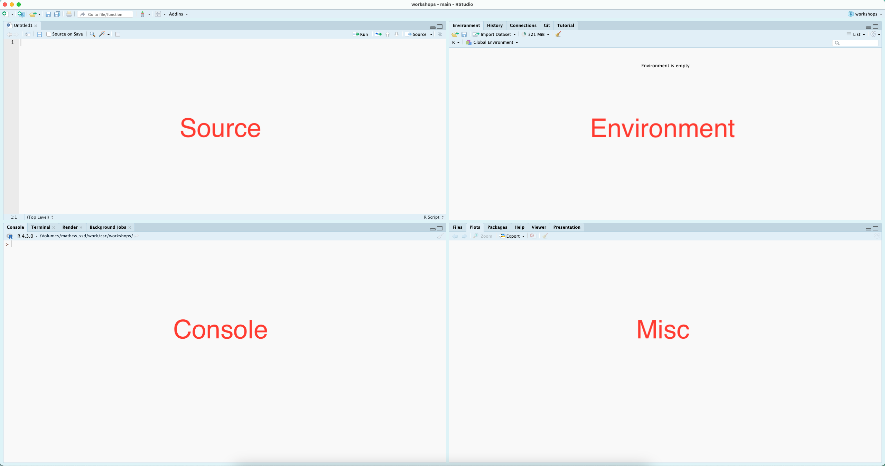
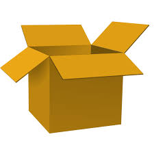

R: Fundamental Concepts with RStudio
Alex Jack
2026-11-03 21:32:15
What is this series about?
- Modern research consists of computing, lots and lots of computing
- This series is designed to introduce researchers to the basics of research computing through R
- Warning: assumes you’ve already installed Rstudio and R
- If you have not done so please make an appointment with me through the CSC and I would happily assist you :)
A high-level data analysis workflow
Import (data) ➡️ Tidy (data) ➡️ Visualize (data) ➡️ Communicate (findings)
Where we are in the series
- R: Fundamental Concepts with RStudio
Why R: supported and open source
- free and open source
- built for data analysis and statistics
- huge community and package ecosystem (20,000+ packages on CRAN)
Why R: reproducibility and replicability
| Term | Meaning |
|---|---|
| Reproducibility | Same data, same methods |
| Replicability | New data, same methods |
- A script records every step, which makes your work reproducible

Most scientists report failing to reproduce others’ results, and many their own. Survey of 1,576 researchers (Baker, 2016, Nature).
Motivation 🤔
- Stand on the shoulders of giants: others can only build on your work if they can see what you did
- Efficiency: automate repetitive tasks, get to the important task of thinking
- Scale: work with datasets far too large for a spreadsheet
- Your future self: six months from now, you’ll need to know what you did, too
R vs. RStudio
- R is the engine: the language that does the computing
- RStudio is the dashboard: an interface that makes R easier to drive (an integrated development environment or IDE)
Today’s Goals
By the end of this session, you should be able to:
- Find your way around RStudio
- Install and load packages
- Run code and use functions
- Create and name variables
- Recognize R’s main data types and data structures
- Know where to look for help
RStudio

Installing packages
Simple Math
## [1] 4## [1] 1## [1] 9## [1] 2## [1] 3Functions
## [1] 1 2 3 4 5 6 7 8 9 10Variables

Creating variables
# You can then recall the values (object) associated with your variable...
my_variable <- c(1:10)
myAlphabet <- letters[1:5]
myNumbers <- c(1:5)
#And plug it into functions, ie, do computations on it...
my_variable## [1] 1 2 3 4 5 6 7 8 9 10## [1] 2 4 6 8 10 12 14 16 18 20Naming variables
Data types
- data (and the variables that we use to store them) come in different shapes and sizes
- think of a variable as a box and the data are the things you want to put in, not all boxes fit all types of stuff (data)
- note: the function
typeof(), will tell you what data type you have…
Boolean (Logical Data)
booleandata are generally referred to aslogical
## [1] "logical"Numeric (Double)
- in
Rnumericdata are subdivided intodoubleandinteger
## [1] "double"Numeric (Integer)
## [1] "integer"Characters
characterdata always needs to be wrapped in single or double quotations.
myChar <- "a" # Note that R does not distinguish between '' and "" but the use has to match
typeof(myChar)## [1] "character"Complex
## [1] "complex"Data Structures 🗂️
Vectors
## [1] 1 2 3 4 5 6 7 8 9 10## [1] "a" "b" "c"## [1] TRUE TRUE FALSEMatrices
## [,1] [,2] [,3] [,4] [,5]
## [1,] 1 3 5 7 9
## [2,] 2 4 6 8 10Data frames
## letter nol
## 1 a 1
## 2 b 2
## 3 c 3
## 4 d 4
## 5 e 5Lists
## $item_1
## [1] "a" "b" "c" "d" "e"
##
## $item_2
## [1] 1 2 3Arrays
- A matrix with more than two dimensions: rows, columns, and layers
- Like a stack of ice cube trays or milk carton containers
## , , 1
##
## [,1] [,2] [,3]
## [1,] 1 3 5
## [2,] 2 4 6
##
## , , 2
##
## [,1] [,2] [,3]
## [1,] 7 9 11
## [2,] 8 10 12Identifying Data Structures
## [1] "integer"## [1] "matrix" "array"## [1] "data.frame"## [1] "list"Resources: getting help
- Forums (e.g., Stack Overflow or Posit Community)
- Blog posts and online tutorials (search for ‘blogdowns’ on a topic)
- Package papers (often Journal of Statistical Software)
- Books, many free online (see References)
- Want to practice? 🤓
- Try
swirl, which teaches R interactively in your console
Resources: the ? operator (and vignettes)
References
- aRrgh: a newcomer’s (angry) guide to R, by Tim Smith and Kevin Ushey - http://arrgh.tim-smith.us/
- YaRrr! The Pirate’s Guide to R, by Nathaniel D. Phillips - https://bookdown.org/ndphillips/YaRrr/
- R for Graduate Students, by Wendy Huynh. - https://bookdown.org/yih_huynh/Guide-to-R-Book/
- Advanced R, by Hadley Wickham - http://adv-r.had.co.nz/Introduction.html
And through the library, the O’Reilly platform hosts a plethora of titles related to R.
- https://www.w3schools.com/r/r_data_types.asp
- Baker, M. (2016). 1,500 scientists lift the lid on reproducibility. Nature, 533(7604), 452–454. https://doi.org/10.1038/533452a